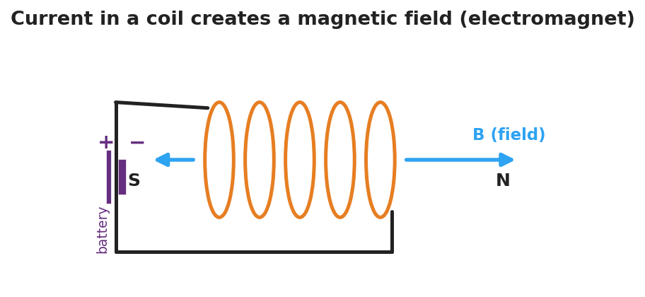
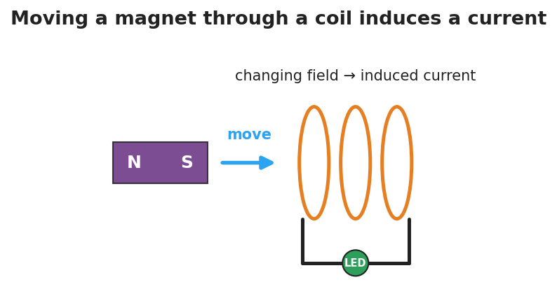

Unit: Current Electricity — Lesson 05: Electromagnetism (The Induction Junction)
Phenomenon
A magnet held still inside a coil of wire does nothing. But move the magnet in and out, and an LED in the circuit flashes. Across the room, a coil wrapped around a nail picks up paperclips — but only while a battery is connected.

Driving Question
What is the two-way connection between electric current and magnetism?
Notice & Wonder
Watch the LED stay dark with the magnet still, then flash as it moves. List two things you notice and two things you wonder.
Initial Model
Draw the coil with the magnet inside it and the LED in the loop. Mark when the LED is ON. Predict: does it matter how fast you move the magnet? What happens if you stop?
Investigate
Drag the magnet through the coil with the position slider, or press Play to sweep it back and forth. A galvanometer needle shows the induced current. Try moving it slowly, then fast — and try holding it still. The current depends on how fast the field through the coil is changing, not on where the magnet sits.
Induced current ∝ how fast the magnet moves: 0.0 (relative). Hold the magnet still and it drops to zero.

Make It Make Sense
- A current flows through a coil of wire. What forms around the coil, and what is the coil now acting like?
- A magnet is held perfectly still inside a coil connected to an LED. Is there an induced current? Explain.
- A hand-crank flashlight has no battery. Explain where the light's energy comes from, using electromagnetic induction.
Stuck? Sentence frame
"A current is induced only when the magnetic field through the coil is ___, and a faster change makes the current ___."
Key Vocabulary (max 3)
- magnetic field — the region around a magnet or a current-carrying wire where magnetic forces act, represented by field lines from north to south
- electromagnet — a coil of wire that becomes magnetic only while an electric current flows through it; more turns or more current makes it stronger
- electromagnetic induction — the production of a current in a coil by a changing magnetic field; the basis of generators (motion → electricity)
Revise Your Model
Return to your Initial Model. Did the speed of the magnet matter? Rewrite your explanation for why the LED only lights while the magnet moves, using electromagnetic induction.
Return to the Phenomenon
In one sentence using electromagnetic induction, explain why the shake-flashlight only makes light while you shake it: shaking keeps moving the magnet through the coil, so the changing field induces a current — stop shaking and the field stops changing, so the current (and light) stops.
Exit Ticket + Closing Reflection
- (a) A current flows through a coil of wire — what does it create around the coil? (b) A magnet is held perfectly still inside a coil connected to an LED — is there an induced current? Why or why not? (c) Name one device that uses electromagnetic induction to generate electricity, and explain in one sentence where the energy comes from.
- Reflection: Where in your own life do you now realize electromagnetic induction is quietly working?